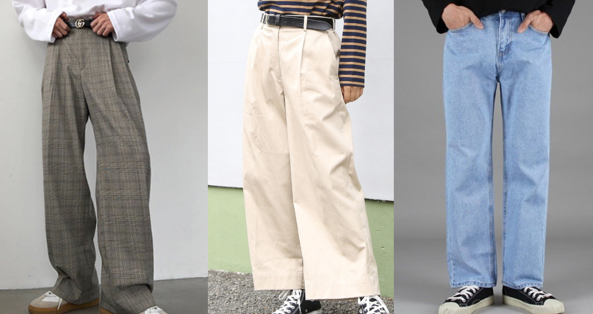
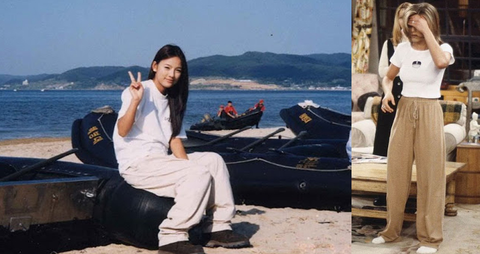
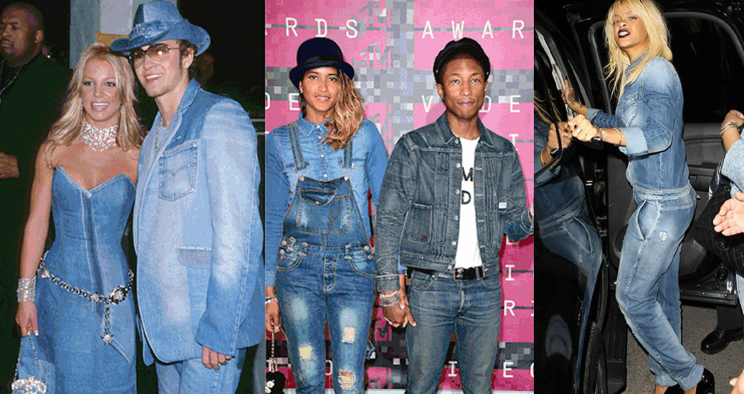
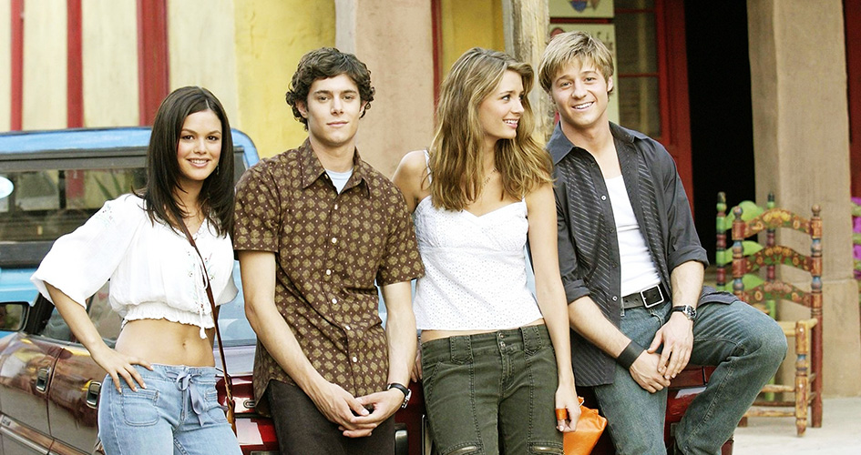

👑Back to the 2000s outfits🎀
00s Fashion? 갑자기?

유행 해도 나는 결코 입지 않겠다고 다짐했던 부츠컷 청바지와 와이드 팬츠...
내 과거의 다짐을 지키기 위해 괜한 오기를 부리며 흐린눈 했었다.
BUT

이 녀석들의 통풍성 X 편리함을 뒤늦게 깨닫고

인생템이 되었습니다...
다들 입으니까 괜히 더 예뻐보이는거 아세요?
하이웨스트라 다리도 길어보이고...
플레어 진이라 종아리 체형도 커버되고..
PO지름신WER

근데 요새 옷들 이거 이거 어디서 본거같은데

그것은 바로 바로 90년대 후반 패션!!
횰언니랑 레이첼 어제 인계동 투썸에서 본거같은데;
코디 완전 엊그제 잖아요
잠깐, 패션은 20년마다 돌고 돈다는 말이 있죠?
아하!
올해엔 2000년대 옷들이 유행하겠군요

2000년대 패션을 미리 꿰찬다면
한경대 패션짱이 되는 일은 시간문제!
Y2K의 데이트/외출 용 코디✨

주요 색상 팔레트는 물빠진 검은 색조, 금속재질의 향연입니다.
망고나시와 라이더 자켓, 청키슈즈(라고 쓰고 어글리 슈즈라고 읽는다)는 남성들에게,
망사, 스카프 나시, 상자 주름치마, 가죽치마, 반짝이는 바지, 신발등은 여성들에게 큰 사랑을 받았습니다!
Y2K의 데일리/캐주얼 코디👖

데님은 단순히 청바지를 넘어 데님X데님 코디가 유행했는데요,
남성, 여성을 가리지 않고 데님 소재의 모자,자켓,치마,원피스등
여러가지 아이템으로 활용되었습니다!

크롭탑, 오프숄더 탑, 부츠컷 바지,어그부츠등은 여성들에게,
카고바지, 찢어진 청바지, 폴로셔츠, 쪼리 등은 남성들에게
일상복으로 활용할 수 있는 기본 아이템으로 사랑받았습니다!
Y2K Fashion 더 쉽게 들여다 보기🎬
 🎸프리키 프라이데이 보러가기 👑퀸카로 살아남는 법 보러가기🎀❤Clueless 보러가기❤
🎸프리키 프라이데이 보러가기 👑퀸카로 살아남는 법 보러가기🎀❤Clueless 보러가기❤
[프리키 프라이데이],[퀸카로 살아남는 법],[클루리스]등 2000년대 영화들을 추천합니다!
당시를 살아보지 못한 우리로써는 당시의 스타일을 가장 쉽게 느낄 수 있는 최고의 방법이 아닐까요?
내용도 재밌고, 이젠 우리에게 익숙한 할리우드 배우들의 신인시절을 보는 것도 신선한 경험이 될 거에요.
그러면 저는 더 재밌는 패션이야기 들고 돌아올게요 안녕~!